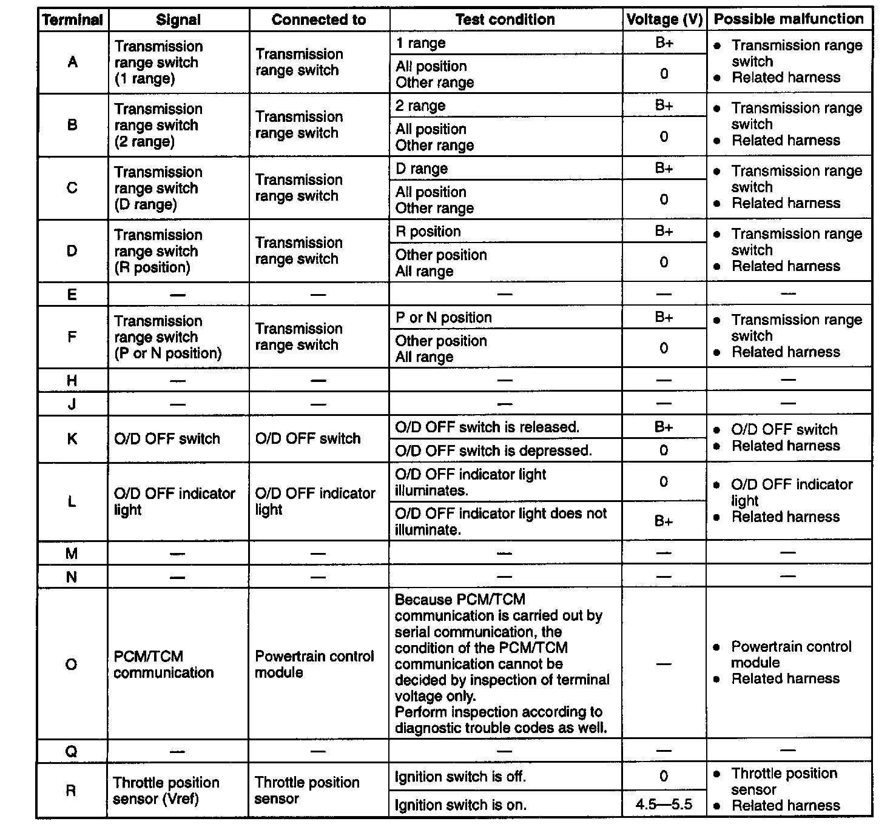
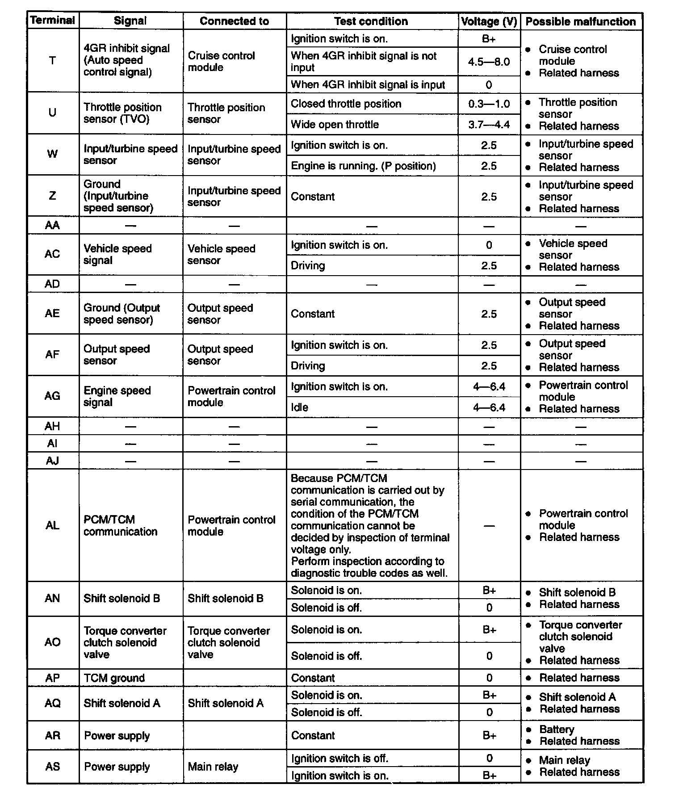

Control Module: Testing and Inspection
TRANSMISSION CONTROL MODULE INSPECTION1. Turn the ignition switch to ON, and inspect the transmission control module terminal voltage, referring to the Terminal Voltage Chart.
2. If any transmission control module terminal voltage is incorrect, inspect the related input of output devices and wiring. If no problem is found, replace the transmission control module.


Terminal Voltage Chart (Reference Data)
Note: Use the ground of terminal AP of the transmission control module when measuring terminal voltage as an error may occur when the negative (-) lead of the circuit tester is connected to ground.